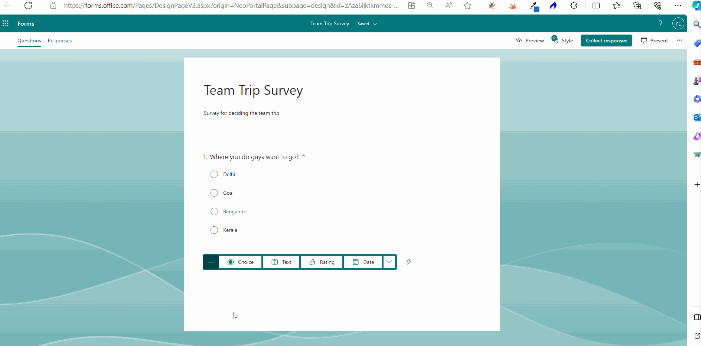
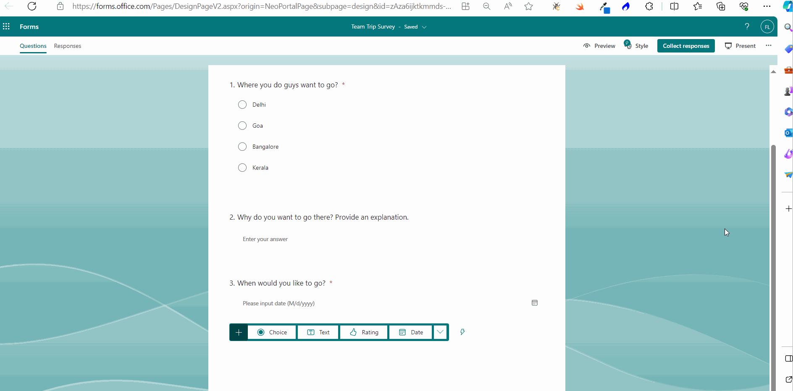

How to Create Forms in Microsoft 365?
Note: Most of the images contained within this article are gifs. Click them to understand how Microsoft Forms work better.
Microsoft forms help you create user surveys and quizzes. These forms collect vital data that help you take informed decisions. Let’s understand how to create these Microsoft forms (using pre-defined templates and from scratch), send them to users and view/analyze the user responses.
Accessing Microsoft 365 Forms App
Microsoft Forms can be accessed in 2 ways:
- From the App Launcher: If this is your first working with Microsoft Forms, then it will not be available within the listed apps in the app launcher. You’ll have to select App Launcher >> Explore all your Apps >> and under Productivity tab you’ll find the Forms app.
- By clicking this URL: https://forms.office.com/ Clicking this URL directly takes you to the Microsoft Forms app.
Note: Once you start using Microsoft Forms, you’ll notice that it gets listed in the list of App Launcher apps.
Microsoft 365 Forms Based Survey
You can create all kinds of user surveys with Microsoft forms. You can either create them from scratch or make use of the pre-defined templates if you quickly want to put together a survey.
Creating Surveys from Pre-Defined Template
Let’s create an employee satisfaction survey from a pre-defined template.
Once you are within the Forms app, do the following:
- Click the Explore templates dropdown available at the top right corner. A list of pre-defined survey templates gets listed.
- Select the Improve employee satisfaction template by clicking on it. You can preview the template by scrolling down and selecting the Start Now option. You’ll notice that the entire form gets listed and it contains all that is expected of an employee satisfaction survey.
- Click the Start to edit button to work on the form. Since the aim is to put together a quick survey here, we’ll skip the working on the form fields and see the different ways in which you can send out the form. Note: To understand how you can work on the form’s fields, skip to: create Microsoft forms from scratch section.
- The pre-defined Microsoft form opens in edit mode as shown in the image.
- Click the Collect responses button. The Send and collect responses box opens up.
- Selecting the user group you are going to share the form with: You have 3 different options to choose from:
- Anyone can respond – for sending surveys to people outside of MSFT community.
- Only people in MSFT can respond – for sending exclusive MSFT community-based surveys.
- Specific people in MSFT can respond – for sending MSFT community-based surveys only to specific people or groups.
- Selecting the format you are going to share the form in:
- As link – for sending the survey as link.
- Via email – for sending the survey through email.
- As QR codes – for sending the survey as scannable QR codes.
- As widgets to be included in webpages or Microsoft Sway – for embedding the survey as widgets within webpages or Microsoft Sway.
- Select a group and share the survey with them as shown in the image.
- Enable One response per person option before sending the survey. Otherwise, responders will be able to send multiple responses.
- Since the group Sales and Marketing selected in the above image is a teams-enabled group, Teams checkbox gets enabled. This means the form link gets sent through both Microsoft Outlook and Microsoft Teams apps.
- You can also embed the cover of the survey template in the mail by turning on the Embed cover option as shown in the image.


The following options are available:
Notes:

Read viewing survey results to understand how to check user responses and analyze survey results.
Creating Surveys from Scratch
Let’s create a team trip related survey – that uses all the available form fields – from scratch.
- Click the New Form button.
- The new form opens. Enter the form title and description.
- Let’s create a multi-choice question which lets participants select the trip location of their choice.
- Let’s make this question a mandatory one - since the entire survey depends on this – by turning on the Required option.
- Let’s add a text-based question now which prompts participants to explain their choice of location using a few words. And make this a non-mandatory field. 
- Let’s a create a date field this time which prompts participants to enter a preferred date for the trip and make it a mandatory field. .
- Let’s create a rating question this time to seek the participants’ opinion on whether they are okay with a non-booze party or not. Note: Rating question is a question which allows participants to rate their opinion about something by giving it stars. 
- Let’s create a Likert question now for deciding whether the participants will be bringing along their spouse and children for the trip. Note: Likert questions are questions with multiple statements which can have multiple answers.
- Next let’s create a Net Promoter Score question for letting participants rate the previous team trip on the scale of 0-10.
- Next let’s create an upload question that asks for the participant’s passport. Note: Upload questions are questions which accept an upload as the answer.
- Finally, let’s add a ranking question that help participants rank the activities they would prefer the most on the trip from top to bottom.
- Select the branching question by clicking on it. Next click ‘…’ more options (at the bottom) >> select Add branching option.
- Branching options page opens. Here you decide where the participants selecting the Goa as the trip location get branched or redirected to by selecting the question from the Next dropdown against the Goa option as shown in the image.
Note: Notice how AI-based suggestions pop up which you can make use of, if needed.
Note: As shown in the image, you also get to decide the no. of levels and the symbol that denotes the rating.
Note: As shown in the image, you also get to choose the number of files to be uploaded and the size of the file. Only word, excel, ppt, pdf, image, video, audio file formats are supported.
Note: You can also get question suggestions by clicking on the suggestions icon as shown in the image. You can select one of the suggestions or all of them based on your requirement.
Branching Questions
Sometimes you may have to break the regular survey flow and send or direct the participant to some other question depending on the choices they select. For example, redirecting the participant depending on the sex they select (in a health-related survey) and asking appropriate questions. Such questions which are capable of changing the flow of the survey are known as branching (redirecting) questions.
Let’s create a branching question in our team trip survey. The first question is going to be our branching question that decides what the next question is the survey going to be.
If the participants opt for Goa, we are going to send them straight to the question whether they are going to be okay with a non-booze party. (The idea behind this is that Goa is famous for booze; so those opting for Goa may not like a non-booze party. So it’s best to get their thoughts on this).
If the participants opt for locations other than Goa, the survey follows the normal flow and serves up the next question we set up in the survey. And whether they are okay with the non-booze party question comes up later.
Turning the First Question into a Branching Question
Follow the instructions below:
Testing Whether Branching Works or Not
You can test whether the branching question works as it is supposed to while previewing the survey. You’ll notice that if you select the Goa as the trip location, the non-booze party question gets listed immediately. If you select locations other than Goa, then the survey follows the normal flow that we set up earlier.
Modify Survey Settings
Before you send the survey to participants, you may want to edit the following survey settings as shown in the image.
- Enabling One response per person: enabling this prevents participants from sending multiple responses to the survey.
- Allow respondents to edit their responses: enabling this lets participants to edit their responses, if they change their mind or select the wrong option the first time. (Since this is a survey and not a quiz, it’s best to have this option turned on).
Note: To reach the survey settings, select ‘…’ more options >> Settings (as shown in the image).
Sending the Survey
Let’s send the survey through mail (as shown in the mail).
- Click Collect responses button >> and select the group >> and click Send.

Note: Since the group Sales and Marketing selected in the above image is a teams-enabled group, Teams checkbox gets enabled. This means the form link gets sent through both Microsoft Outlook and Microsoft Teams apps.
Note: You can also share the survey as links, QR codes and embed codes (to be included in webpages or Microsoft Sway) as shown in the image.
How Users Take the Survey
Participants take the survey by clicking the form link shared with them.
Viewing Survey Results
- Open the form and click the Responses tab.
- Click More Details link to get more info about specific data. .
- Click View results button to get individual participant submissions.
- You can also view and share the survey results in excel format.
- You can also send reminder to participants who are yet to complete the survey.

Microsoft 365 Forms Based Quiz
You can create two types of quizzes with Microsoft Forms.
- Quiz with Practice Mode Turned On: These quizzes are more like training. They guide the participant with the correct answer (if they need one) and help them gain knowledge they are lacking.
- Quiz without Practice Mode: These quizzes test the participant knowledge without offering any kind of support or tips.
Let create one of each to understand how Microsoft Forms based quizzes work.
Quiz with Practice Mode Turned On
- Click the New Quiz button. Provide a name and description for the quiz.
- Click Add New button and select multi-choice answers option for the quiz. Enter the question and the answers.
- Selecting the correct answer: Check the option which is the correct answer. This enables the Microsoft Forms to grade the answers submitted by the participants
- Adding points to the quiz: You can enter the points each question carries in the points box.
- Let’s add 2 more questions to our quiz and keep it short.
- Turn on practice mode: Go to select ‘…’ More Options >> Settings >> Turn on Practice Mode.
- You can also set a Start date and End date for the quiz. You can also Shuffle questions. But you cannot Set time duration for quizzes with practice mode turned on.
- Click the Collect responses button and mail the quiz to the participants.
Note: You can mark all questions are required if you want.
Participant taking the Quiz
Like mentioned before, quizzes with practice mode turned on are more like trainings that guide participants through the quiz with the correct answers. The idea is to help the participant gain knowledge.

Note: The participants can also review the results once the quiz is completed. If the answer was revealed to the participant, that question gets marked as ‘Revealed correct answer’.
Quiz with Practice Mode Turned Off
Let’s turn off the practice mode and see how the quiz appears to the participants.
- Turn off practice mode: Go to select ‘…’ More Options >> Settings >> Turn off Practice Mode.
Participant taking the Quiz
Like mentioned before, quizzes with practice mode turned on are more like trainings that guide participants through the quiz with the correct answers. The idea is to help the participant gain knowledge.
Note: The participant score is displayed at the end only for quizzes that are automatically graded based on the correct answers marked in the questionnaire. For manual quizzes, participants get their scores only after their answers are reviewed manually.
Viewing the Quiz Results
- Open the form and select Responses tab. Results for all the questions based on the answers provided by the participants get listed.
- Using More Details links, you can get more details on the answers like who answered what and whether it was correct or not.
- Click Review answers to view individual participant answers to the questionnaire.
- Click Remind them to send reminders to those who are yet to take the quiz.
- You can also share the quiz results as excel sheets.
Posting Scores
Though the participants get their quiz scores immediately with automated quizzes, you still have the option of posting the score and adding your feedback to the participants
Note:Participants can view the posted scores and quiz feedback using the same quiz link that was shared earlier.
Posting Scores without Feedback
- Click Post Scores >> Select the participant >> Post scores button
Posting Scores with Feedback
- Click Post Score button >> Select the participant by clicking the user name. Click the message bubble below the respondent’s name and enter the quiz feedback.
- The participant receives your feedback along with the posted score. Your feedback appears at the top of the form as shown in the image.
Duplicating and Collaborating on Forms
- You also can duplicate or make a copy of the form so that it can serve as base for another quiz by selecting ‘…’ icon >> Collaborate or Duplicate >> Share as a template option. You can then modify the newly created form to suit your requirements.
- You can also add collaborators to the form so that they can jointly work with you on the survey or quiz by selecting ‘…’ icon >> Collaborate or Duplicate >> Add collaborators option.
Note: Collaborators can be (i) Anyone with an Office 365 work or school account, (ii) Only people with MSFT accounts or (iii) Specific people within MSFT community. You can choose collaborators by clicking on the dropdown as shown in the image.
Importing Forms
You can also import data from your word documents or PDF files by clicking the Quick Import button and specifying whether you want a form or quiz to be created from the data being uploaded.
The format your file should be in can be viewed by clicking the See import guidance as shown in the image. The file being imported should contain i) multiple choices, ii) clear separation between questions, and iii) content should be arranged vertically. The file should not contain i) figures or complex equations.
Additional Notes
- You can also upload images to your survey and quiz questions.
- You can also customize the form theme for your surveys and quizzes.
- Quizzes can also contain branching questions, just like surveys.